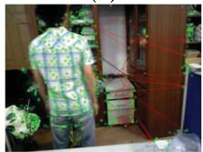
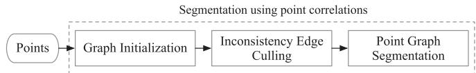

阶段 H · 专题支线（动态环境）/ Lesson 0154
纯几何路线 · 不靠语义也能判动态
不打语义牌：用点相关性图与长时一致性，把动点从静态里「裂」出来 🧩
🎯 主题：纯几何判动态 · 最大连通分量 · 长时 CRF
👥 作者：Dai 等 / Du 等
📅 2022 · RA-L / TVCG
本节目标
读完你应该能：① 说清「纯几何派」为什么不需要语义分割（适合无 GPU/无训练数据平台）；② 讲出 DSLAM 用 Delaunay 点相关性图 + 最大连通分量判静态的原理；③ 讲出 CRF 长时一致性怎么用「跨多帧的统计」分离动静；④ 背出两篇的关键数字（30.65 ms / ATE 0.030 m）；⑤ 记住纯几何派的命门：动态占比过高会退化。
和前面课程怎么接
两篇都在第三季 0043–0045 的 ORB-SLAM2 前端/后端上改造 ，和 0153 一样是「打补丁」，但补丁完全不碰语义网络 。动态这件事第一季 0005（SW-NDT 激光侧） 也是「不靠语义、靠几何残差」的思路——本节是视觉侧 的纯几何答案，正好和 0153 的语义结合路线对照。注意 第七季 0147 的 SAM 在这里完全没用上，说明「纯几何」是一条独立于「语义零件」的路线。
1. 先排雷：DSLAM（无空格）≠ DS-SLAM（2018）
命名坑 ：本节第一篇系统名是 DSLAM （没有空格 ，D-S-L-A-M），作者 Dai 等，2022；而上节的 DS-SLAM （有空格 ）是 Yu 等，2018。一个空格之差，方法完全不同——前者是纯几何点相关性图，后者是语义+几何五线程。写课时一律用「全称 + 作者 + 年份」锚定，避免念混。
为什么要有「纯几何派」？因为语义分割有两个硬门槛：要 GPU、要训练数据 。在嵌入式机器人、无网络的设备上跑不了 Mask R-CNN。纯几何派的意思是：只看「点与点之间的相对位置随时间是否一致」，就能判断谁在动 ——连「这是人还是车」都不需要知道。
DSLAM（2022）
Delaunay 三角化建「点相关性图」；相对位置跨时间一致 → 同刚体（静态或同动）；剔除不一致边后，最大连通分量 判为静态。30.65 ms/帧，无需 GPU。
CRF 长时一致（2022）
先用 GC-RANSAC 初标动静，再用「长时一致性条件随机场（LC-CRF）」给每个 landmark 打动静标签。不看语义，靠跨多帧的统计 ：动态点观测更不一致、重投影误差更大。
2. DSLAM：用「点相关性图」判断谁和谁一起动
生活类比：你蒙着眼睛待在房间里，只许摸「相邻两点的相对位置」。如果一组点之间相对位置几秒钟都不变 ，它们多半钉在同一块静止背景上（或同一个刚体一起动）；如果某几个点相对位置老在变 ，它们就是动态物体上的点。DSLAM 就是把这种「相对位置一致性」变成图。
它维护每个点相对邻居的历史位置差，定义为点相关性测量：
这句话在说什么 ：取点 i 相对点 j、点 k 的位置差。如果跨时间这个差都稳定 ，说明 i、j、k 属于同一个刚体（一起静止或一起运动），它们「相关」；若差经常跳变 ，说明其中有点在动，它们「不相关」。最终优化目标同时包含 ORB-SLAM2 的投影误差项 J_p 和新加的相关性约束项 J_ba，把不相关边剔除后，残图自然裂成「静态大块」和「若干动态小块」，最大（体积）连通分量被判为静态场景点 。
Delaunay 点相关图：最大连通分量 = 静态场景
绿色大块 = 静态（最大连通分量）
红色小块 = 动态（被剔除） 不一致边 ✂ 被剪断
为什么最大连通分量 = 静态？ · 先验假设：静态结构占场景多数（背景墙、地大面积）
· 动态物体只是若干小簇，相对位置老变 → 边被剪 → 自成小连通块
· 所以「剩下来最大那块」最可能是静态
这张图在画什么： 左边一片绿点是静态背景上的地图点，彼此用 Delaunay 边连成密密的大块；右边一小簇红点是动态物体上的点，相对位置老变，边被画成虚线（将被剪断）；中间一条灰虚线是跨区的「不一致边」，也被剪。
怎么看这张图： ① 绿色区域是一个连通的大图 ，因为静态点之间相对位置长期一致，边都保留；② 红色区域点之间相对位置跳动，边被标虚线（表示「不相关」），最终被剔除；③ 核心逻辑是「最大连通分量 ≈ 静态」 ——它依赖「静态结构占多数」这个先验。④ 下方橙框点明：这不是语义，纯粹是「谁和谁相对位置稳」。
要记住的一句话： 纯几何派不认「人/车」，只认「点相关性」；最大连通分量就是它的「静态判据」。

原图注（DSLAM Fig. 4）： Two-dimensional example of the segmentation method using point correlations: (a) current frame; (b) reference frame; (c) structure graph of the matched feature points in the reference frame created by Delaunay triangulation; (d) graph after removing inconsistent edges; (e) extracted largest region, which belongs to the static scene; and (f) moving object region separated from the static scene.
怎么看这张图： 这就是上面自绘图的论文六联图版。(a)(b) 是当前帧与参考帧；(c) 用 Delaunay 把匹配点连成结构图；(d) 去掉不一致边；(e) 提取出最大的静态区域；(f) 分离出的动态物体区域。它一步步展示了「图怎么裂成静态大块和动态小块」的全过程，和自绘图一一对应。
要记住的一句话： Fig. 4 是 DSLAM 方法的可视化总览，(e) 的「largest region」就是自绘图里那块绿色静态大块。

原图注（DSLAM Fig. 3）： Overview of the proposed segmentation method, which comprises three steps to divide the point cloud into different components with different motion patterns: graph initialization, inconsistent edge culling, and point graph segmentation.
怎么看这张图： 它把方法拆成三步：① 图初始化（Delaunay 连边）、② 不一致边剔除、③ 点图分割（取最大连通分量）。这正是公式 z_{ijk} 与最大连通分量判据的工程落地。注意它标的是「different motion patterns」——纯几何能区分的是「运动模式不同」，不是「物体类别不同」 。
要记住的一句话： DSLAM 三步流水线 = 建图 → 剪边 → 取最大连通分量，全程不碰语义。
3. 纯几何派的命门：动态占比过高会退化
「最大连通分量 = 静态」这个先验，有个显而易见的反例：如果场景里大部分都是动的 （比如拥挤的行人通道），静态点反而成了少数，最大连通分量可能误把动态点包进去。这是纯几何法的通病。
当动态点占多数：最大连通分量失效 退化场景（动态占多数）
红块反而最大 → 误判静态 ✗ 正常场景（静态占多数）
绿块最大 → 判静态正确 ✓
这张图在画什么： 左右两个对照。左边动态点占多数，结果红色（动态）连通块最大，被误判成静态；右边静态占多数，绿色大块正确判静态。
怎么看这张图： ① 左图说明「最大连通分量」这个判据反过来的时候就崩 ——它默认「静态是多数」；② 右图是 DSLAM 设计时的正常前提；③ 结论：纯几何法在「动态主导」场景鲁棒性有限 ，作者虽未在表里给「动态占多数失败」的数字，但方法假设本身就决定了这个弱点。
要记住的一句话： 「最大连通分量 = 静态」依赖「静态占多数」；动态占满画面时，纯几何派会退化。
纯几何派的另一面（优势） ：正因为不删任何「可动类」先验特征，静态场景里它几乎不亏本 ——速度和精度都和 ORB-SLAM2 相当（30.65 ms vs 31.34 ms，比 DynaSLAM 的 738.46 ms 快约 24 倍，且无需 GPU）。这是它相对 DynaSLAM/DS-SLAM 语义派的最大卖点：没有「误删静止可动物体」的代价 。
4. CRF 长时一致性：用「跨多帧的统计」判动静
CRF 这篇（Du 等，2022）也是纯几何、无语义，但思路不同：它认为「只看连续几帧」不可靠 ，要用整个序列的长时统计 。核心思想：动态点的观测更不一致、重投影误差更大、被观测次数更少。
它分两步：① 用 GC-RANSAC 对当前帧与参考帧（取前第 10 帧）做 2D-2D 匹配，估计基础矩阵，把 inlier/outlier 当静/动初标；② 用 LC-CRF 给每个 landmark 打最终标签。CRF 的 unary 势由三个静态似然等权平均：
这句话在说什么 ：对每个 landmark，综合三项证据——P_i^α（平均重投影误差越小越静）、P_i^β（被观测次数越多越静）、P_i^γ（极线距离越小越静）——三项等权求平均，得到它「是静态」的概率。pairwise 势再用两个核奖励「重投影误差/观测次数相近的点」同标签、邻近 3D 点更可能同属一刚体。均值场近似求解。关键是它用了「全序列每帧累积」的似然 ，而不是单帧快照。
长时一致性：静态点被观测更久、误差更稳 静态点 S
多帧都在这 → 观测次数多
重投影误差小且稳
动态点 M
只少数帧在这 → 观测次数少
重投影误差大且乱跳
长时统计对比
CRF 判据： 静态似然 =（平均重投影误差 + 观测次数 + 极线距离）三项等权动态点「观测少、误差大、跳得欢」→ 三项都低 → 判动态；静态点反之。跨多帧才可靠。
这张图在画什么： 左边静态点 S 在多帧里都稳定出现在同一处，重投影误差短且齐；右边动态点 M 只在少数帧出现、重投影误差长且乱跳。
怎么看这张图： ① 左图 S 的竖线短且整齐 = 重投影误差小且稳定，且被很多帧观测到；② 右图 M 的竖线长短不一 = 重投影误差大且跳，且只在少数帧出现；③ CRF 把「观测次数、误差大小、极线距离」三项合成一个静态概率，跨整个序列累积 ，所以比只看两三帧稳。④ 这就是它叫「长时（Long-Term）一致性」的原因。
要记住的一句话： 动态点「观测少、误差大、跳得欢」；CRF 用跨帧统计把这种不一致放大成判据。
原图注（CRF Fig. 3）： A static landmark has more consistent observations than a dynamic one. M is a dynamic landmark which moves from M to M4 quickly; just a few frames observe the same location. Static landmark S stays at the same location and is seen at the same position in more frames...
怎么看这张图： 论文原话直接说出了上面自绘图的核心：静态 landmark S 在更多帧里被看到、位置一致；动态 landmark M 很快从一处移到另一处，只有少数帧观测到同一位置。它用重投影点是否「三角化到一致 landmark」来区分动静——这正是 CRF 三个似然的物理来源。
要记住的一句话： Fig. 3 是 CRF 长时一致性思想的几何直观，自绘图把它翻译成了「竖线长短对比」。
原图注（CRF Fig. 6）： Landmark detection in dynamic scenes (a,b) and a static scene (c). Left: Initial static/dynamic labeling. Right: final dynamic 3D landmark detection results after LC-CRF optimization. Green: Static points; Red: Dynamic points.
怎么看这张图： 左列是 GC-RANSAC 的初标（有错），右列是 LC-CRF 优化后的最终结果（绿=静态、红=动态），明显更干净。它证明了「初标不准没关系，长时 CRF 能纠回来」——这也是作者说 CRF 比单帧方法强的地方。注意 (c) 静态场景里 CRF 几乎不误删，呼应「纯几何派静态场景不亏本」。
要记住的一句话： Fig. 6 展示 GC-RANSAC 初标 → LC-CRF 精修的两阶段，是 CRF 方法的招牌图。
互动一：纯几何派相比 0153 的语义结合路线，最大优势是什么？
下面哪句最准？静态场景不亏本 动态更准
正确。语义结合路线（DynaSLAM/DS-SLAM）在静止可动物体场景会「误删可动类特征」，略逊 ORB-SLAM2；而纯几何派（DSLAM/CRF）不删任何「可动类」先验特征，静态场景速度与精度都和 ORB-SLAM2 相当，且无需 GPU。代价是动态主导场景会退化、且不输出语义/轨迹。所以「静态场景不亏本 + 无需 GPU」是它相对语义派的最大卖点。
不对。在「动态检测的绝对精度」上，结合路线（用语义缩小搜索范围）通常更强，尤其对低纹理/遮挡处。纯几何派的优势不在「动态更准」，而在「静态场景不亏本、不需要 GPU/训练数据、动态主导时会退化」。把优势说成「动态更准」正好说反了。
一帧判错不算数：CRF 用「跨多帧的一致性」把抖动压回去
帧
t1 t2 t3
t4 t5 t6
t7
只看单帧：判定会抖
静
静
动
静
动
静
静
t3、t5 被判成「动」
CRF 平滑后
全段一致判「静」——那个孤立的错判被邻居票压回去
判据不再只看这一帧的残差，而是问「周围帧怎么说」
CRF 的职责：把「偶然的抖动」与「真的运动」区分开
代价：要等一段时间的观测才能下结论 —— 长时一致性换来了稳定，但也换来了延迟
好处：纯几何、不用语义、无需 GPU
这张图在说什么： 上半排是「只看单帧」的判定结果：从 t1 到 t7 共 7 帧，绝大多数判成静止（绿），但 t3、t5 两帧因为残差偶然超阈值被判成「动」（红）。下半排是加了 CRF 之后的同一串判定：那两处孤立错判被相邻帧「投票」压了回去，整段恢复一致。
怎么看这张图： ① 先看上半排圆点的颜色跳变——这正是单帧判据的毛病：它分不清「真的动了」和「这一帧算错了」；② 再看下半排那条连续的绿线，它比单个圆点更「稳」；③ 中间那句小字点明 CRF 在干什么：判据不再只看这一帧的残差，而是问「周围的帧怎么说」；④ 最后看底下两行：好处是纯几何、不用语义、无需 GPU；代价是得等一段时间的观测才能下结论。
要记住的一句话： 长时一致性是用「延迟」换「稳定」——它把孤立错判压下去，靠的是不肯只信一帧。
5. 代价账：纯几何派的取舍
代价项
DSLAM（点相关图）
CRF 长时一致
实时性
30.65 ms/帧（≈ORB-SLAM2 速度，远快于 DynaSLAM）
CPU 无 GPU，TUM ~16–18 fps、Bonn ~11–17 fps，近实时
静态场景
几乎不亏本（无语义先验误删）
略亏（几乎静态场景 GC-RANSAC 会误删少量静态点）
动态主导
最大连通分量失效（退化）
高动态且静态点不足时错标
高层输出
只分离动静，不追踪、不建动态轨迹
只判动静，不输出动态轨迹/地图
本课小结 ：纯几何派用「点相关性图（DSLAM）」或「长时统计（CRF）」把动点从静态里裂出来，不依赖语义分割、无需 GPU ，静态场景几乎不亏本。但它有两个命门：① 动态占比过高会退化 （最大连通分量/统计被反转）；② 不输出语义、不追踪动态物体 ，只做「过滤/分离」。下一节看一条更激进的路线——不删，而是把动态物体当路标追踪 。
互动二：CRF 为什么强调「长时」一致性，而不只看连续两三帧？
下面哪句最准？短时会误判 长时更快
正确。只看连续几帧，动态点偶尔「凑巧」静止（如挥手间停顿）或静态点偶尔被遮挡，都会让单帧判据翻车。CRF 把「平均重投影误差、观测次数、极线距离」在整个序列上累积，用统计把偶发噪声平均掉——动态点「观测少、误差大、跳得欢」的长时特征才显现。所以「长时」是为了抗短时的偶发误判，不是为了更快（其实更慢）。
不对。「长时」是拿计算换可靠——跨多帧累积似然比只看两三帧更稳，但更慢而非更快。CRF 强调长时，是因为短时窗口里动态点可能偶发静止、静态点可能偶发被遮挡，单帧判据会翻车；长时统计把这种噪声平均掉。把「长时」理解成「更快」正好说反了它的取舍。
6. 读完你应该能回答
纯几何派为什么不需要语义分割？它适合什么平台？
DSLAM 的「点相关性图」是什么？为什么「最大连通分量」能当静态判据？它依赖什么先验？
CRF 长时一致性的三个静态似然是什么？为什么「跨多帧」比单帧可靠？
两篇的关键数字（DSLAM 30.65 ms、CRF ATE 0.030 m）分别说明什么？
纯几何派的命门是什么？为什么它在静态场景反而几乎不亏本？
DSLAM（无空格）与 DS-SLAM（2018）名字差在哪、方法差在哪？
课后练习（答案收起，点开看解析）
如果场景里 80% 都是走动的人，DSLAM 的最大连通分量判据会发生什么？请解释。
展开查看答案
最大连通分量判据依赖「静态结构占场景多数」。当 80% 都是走动的人，静态点反而成了少数，那些人（动态点）之间相对位置虽然彼此跳动，但若它们整体形成最大连通块，就会被误判为静态——于是 BA 用了一堆真动点，地图崩。这就是纯几何派「动态主导场景退化」的弱点，作者虽没给失败数字，但方法假设本身就决定它。
CRF 的 unary 势 P_i^s 用了三个似然等权平均。如果某个场景极暗、极线距离这项很不可靠，等权设计会有什么问题？
展开查看答案
等权（各 1/3）意味着即使极线距离这项在该场景下噪声很大，它仍占 1/3 权重，可能把可靠的「重投影误差」和「观测次数」两项带偏。更稳的做法是按可靠性加权（但论文用交叉验证固定等权，简单且多数场景够用）。这题想说明：等权是「偷懒但通用」的取舍，不是最优——在极线不可靠的场景它可能不是最佳组合。
对比 0153 与本节：语义结合路线和纯几何路线，各自在「静态场景」和「动态主导场景」的盈亏如何反转？
展开查看答案
静态场景（如停着的车很多）：语义结合路线因「可动类先验」误删静止特征，略逊 ORB-SLAM2；纯几何路线不删先验特征，几乎不亏本——纯几何赢 。动态主导场景：语义结合路线用先验缩小搜索范围、更准；纯几何路线最大连通分量/统计被反转、退化——语义结合赢 。所以两条路线是「互补」而非「谁压倒谁」，取决于场景动态占比。
为什么纯几何派「不输出动态物体轨迹」也被视为一种代价（而非优点）？
展开查看答案
因为很多上层任务（如机器人避让人、预测车流向、AR 遮挡处理）需要「那个动态物体在哪、往哪去」。纯几何派只做「把动点剔掉别污染 BA」，等于把动态信息当垃圾扔了——定位是准了，但下游什么也用不上。下一节 DynaSLAM II 正是要解决这个问题：不删，而是把动态物体追踪成路标，反而帮定位。